Bringing the cloud operating model to the on-premises datacenter.
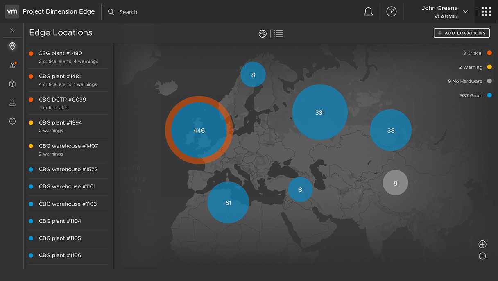
Enterprise hardware procurement is a months-long bottleneck.
Enterprises needing on-premises infrastructure for compliance, latency, or data sovereignty had to navigate a fragmented, months-long process of vendor negotiations and manual deployment.
A self-service portal for managed physical infrastructure.
Partnering with product and engineering, I led the design of a self-service portal that lets IT admins order, configure, and operate fully managed physical infrastructure — Dell racks — provisioned with VMware software stack, directly from the VMware Cloud console.
Mapping the end-to-end service blueprint
Before any UI, I mapped the full service blueprint — aligning the IT admin's digital experience with backend automation, Dell factory logistics, and on-site delivery. The blueprint surfaced everything the cloud operating model would need to absorb on behalf of the user.
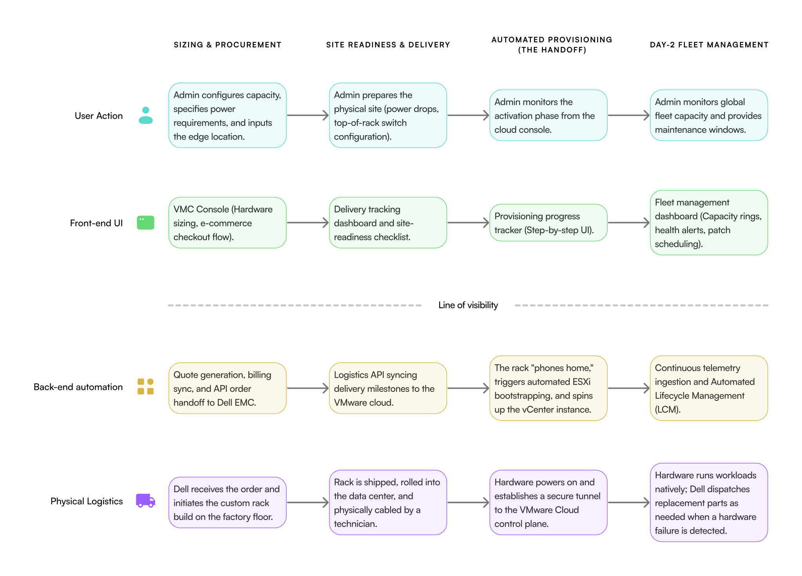
Wireframing the digital experience
I started putting together some wireframes to illustrate what the UI could look like based on the blueprint. This helped in ensuring we were aligned with the end-to-end workflow and allowed us to iterate faster.


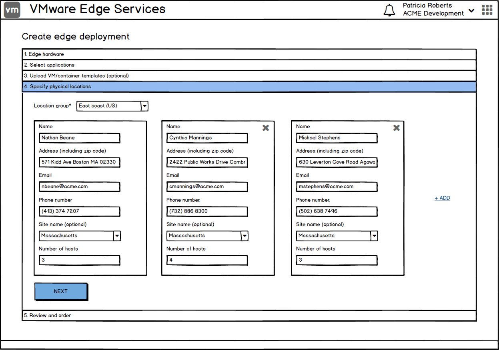


Imagining fleet management at global scale.
Before there was any customer signal, I explored what fleet management could look like at global scale — a unified view for hundreds of locations, drillable from a single map. VMware's CEO Pat Gelsinger and CTO Ray O'Farrell used it to headline the VMworld 2018 keynote, generating excitement about where the platform was headed. It was a concept, not a committed roadmap — it never shipped.
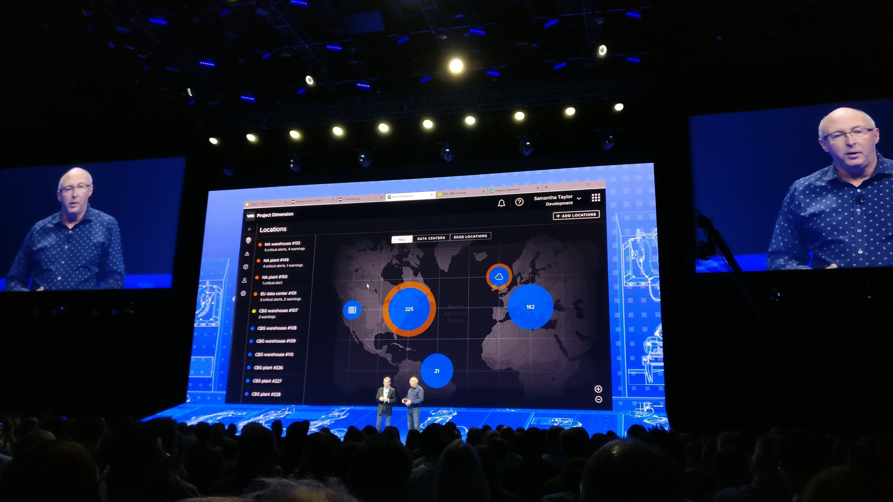
Edge Locations
A global map view of every deployment, sized and colored by health state — critical, warning, no-hardware, good — with the location list alongside.
Regional View
Zooming reveals regional deployments with their health status — maintaining the same level of detail.
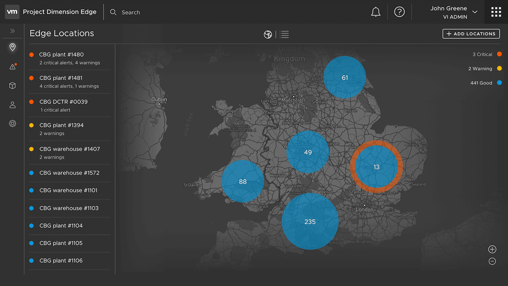
Location Drill-Down
Single-site detail surfaces hardware and service status — what the site operator and the global architect both need to see.
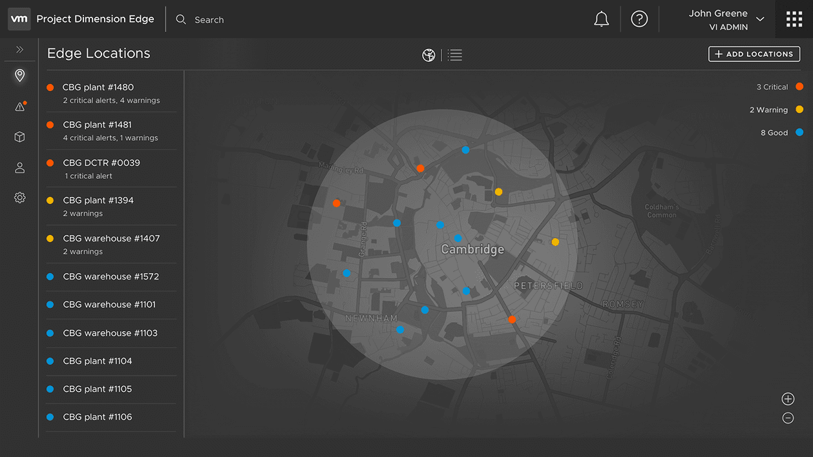
Operational Detail
Down to a specific rack: telemetry, lifecycle state, scheduled maintenance — the same console patterns that ordered the hardware also keep it running.
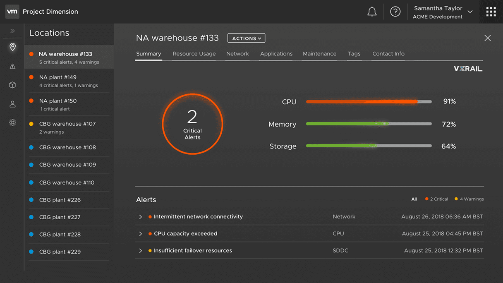
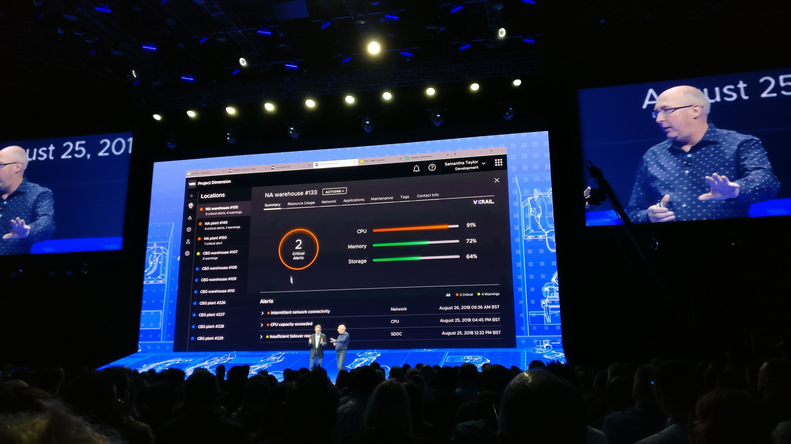
The global fleet map read well in a keynote — but showing it to users early on told a different story. Admins with just one or two locations to start with said it added little value; what they actually wanted was proof that a single site could be ordered, deployed, and operated reliably before trusting the system with more. That feedback is what shaped the MVP: a single-site, end-to-end flow — order → deploy → operate.
From blueprint to MVP, step-by-step.
E-commerce for the datacenter
I designed a streamlined step-by-step ordering flow by abstracting the complexity of physical hardware procurement. Admins can select capacity, specify power drops, networking, and ship physical racks without ever leaving the digital console.

Automating deployment
Before a rack ever reaches the customer, a VMware SRE pre-installs the full software stack on the hardware Dell provisions at its factory — I designed the internal portal SREs use to do this, so the rack arrives ready to activate instead of a blank box waiting on on-site setup. Once it's physically plugged in on-site, the software takes over from there: I designed a transparent provisioning experience that tracks the automated bootstrapping of the SDDC, completely eliminating the need for manual IT deployment.
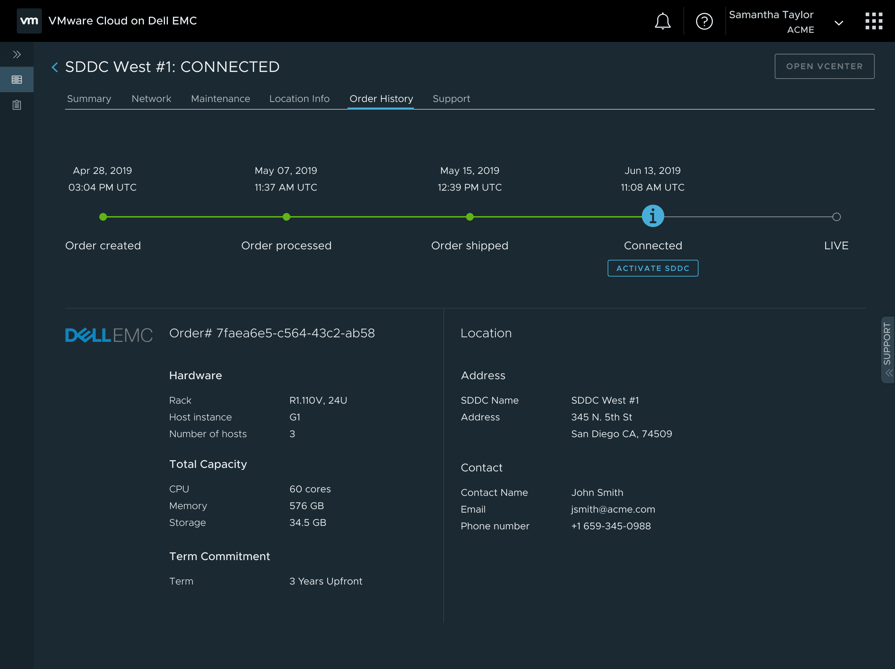
Day-2 operations
Managing on-premises hardware is historically an operational burden. I designed a centralized fleet view surfacing real-time rack health and capacity alerts, shifting the lifecycle management entirely onto the service.

Growing a three-person design team
Two other designers joined partway through the two years, and each grew into ownership of a distinct area. I stayed responsible for the end-to-end ordering workflow, onboarding, day-2 operations, and the factory pre-provisioning portal above. A senior designer who joined the team took ownership of maintenance-window scheduling, then went on to independently own VMware Cloud on AWS Outposts after I helped map its initial end-to-end journey and ordering experience. A junior designer started by helping migrate our files from Sketch to Figma and building out the component library while getting oriented, then grew into owning the networking domain and later VMC's Bring-Your-Own-Hardware initiative.
To get them there, I shared the service blueprint and customer journey so they had the same map I was working from, transferred the technical domain knowledge they needed to move fast, and had them shadow my research sessions to learn the nuances of interviewing IT admins. I was also who they leaned on to flag when a product decision was likely to introduce a usability problem, and to check that their designs still matched user expectations while they were building context. By the end, both were running their own research independently and making design calls with the confidence of subject-matter experts in their areas.
What enterprise IT admins surfaced.
With the MVP live, I ran a deeper round of research to pressure-test the actual ordering flow.
Ordering
Want to specify additional contacts & location logistical information.
Error-prone to have site addresses and other location-specific info entered manually.
Want additional rack options — half rack is not enough.
Want additional host options — GPU-enabled, memory/performance optimized.
Want more clarity on org cloud network.
Would like to provide smaller subnets — /16 is too large.
Want further clarification on term commitments / pricing model.
Want to see pre-requisites in their respective sections.
Would like to be able to save progress at each step.
Expect to see network connectivity in the network section.
Planning
Plan/design phase important and precedes ordering phase — might require separate flows.
Want to be able to specify edge-location environment information (networking, power, cooling, rack) before ordering.
Would like to review documentation before going into the ordering flow.
Want assistance with sizing during the planning / design phase.
Processing
Want to be notified about order processing and shipment.
Post Deployment
Want to be notified about upcoming maintenance & potential downtime.
From insight to shipped fix
These insights didn't just get logged — they shaped the next iteration of the ordering flow.
Planning comes before ordering. Admins wanted to review technical details before ever starting an order — plan/design was its own phase, not something to work out mid-flow. I added a Technical Overview page ahead of the ordering flow, covering compute, storage, and networking requirements up front.
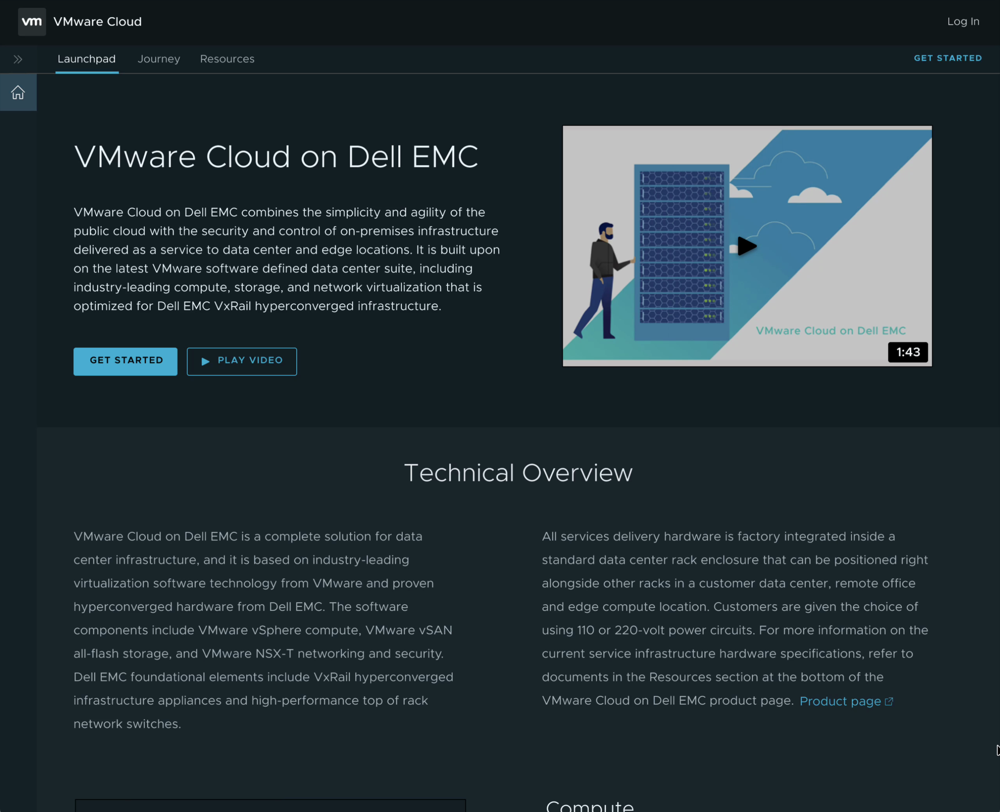
One location at a time. Admins wouldn't commit to multiple sites until they trusted the first one, so I moved location and contact details inside the ordering flow itself instead of collecting them upfront.
Save & continue. Progress got lost mid-order whenever an admin navigated away, their session timed out, or they logged out — costly, since several steps involve heavy data entry: addresses, points of contact, notes, network information, and more. I added a Save & Continue action at every step so that data was never at risk.
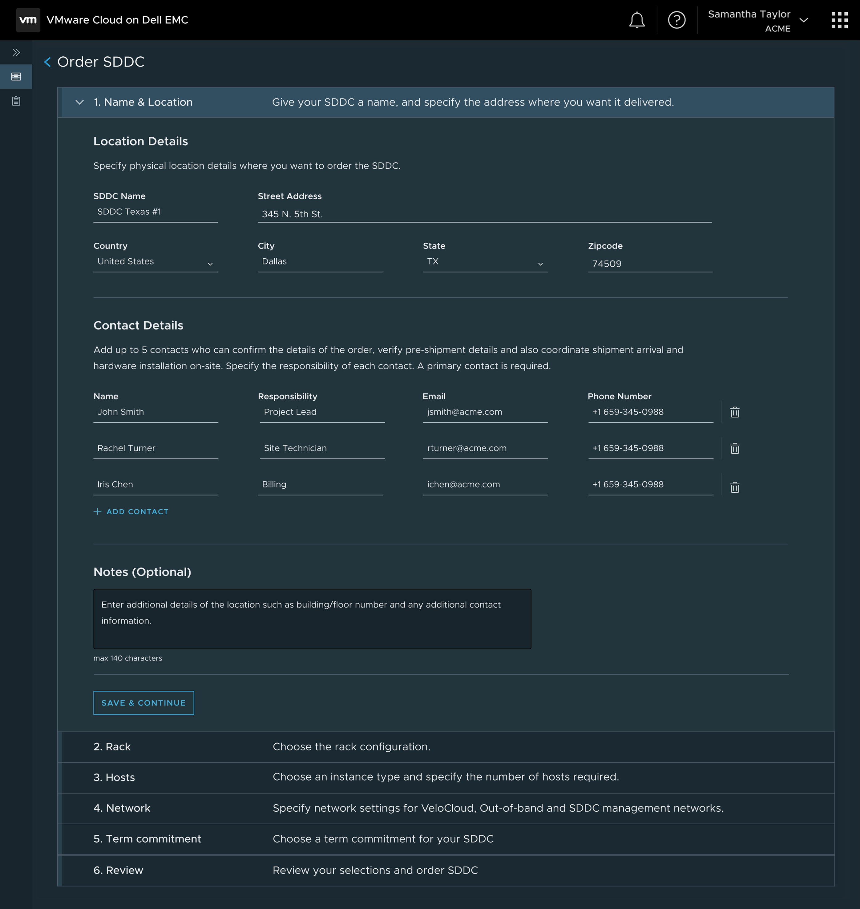
Pre-requisites in context. Rack, power, and network requirements were originally confirmed in one separate step at the end. I eliminated that step and folded each requirement into the existing Rack and Network steps where it was actually relevant.
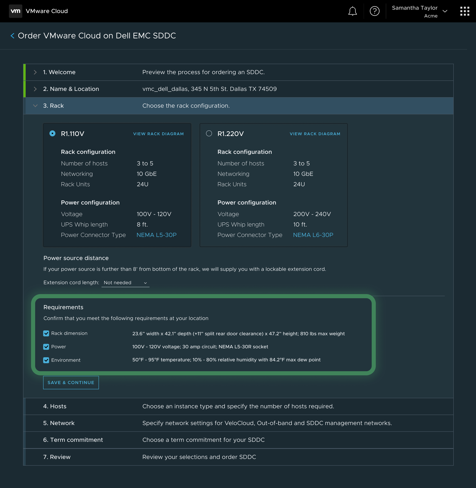
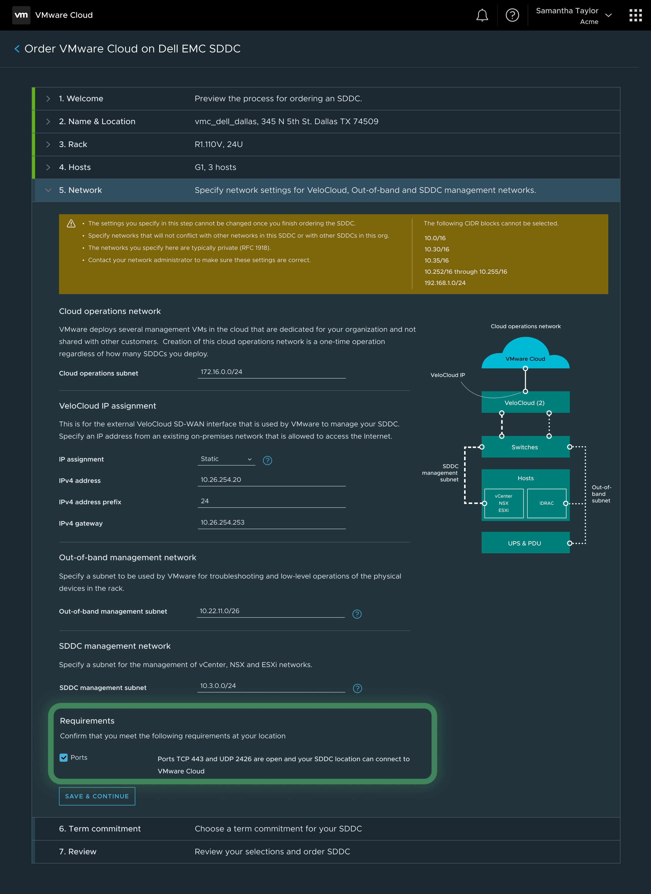
Validated in the admin's own words.
Forget the other ways — we should just use this portal as our central view. The portal is very intuitive!
National healthcare provider
This is really easy. We can now do it ourselves and not rely on partners.
Fortune 500 insurer
This is the perfect solution for us. How do I get started on deploying this at our locations?
Global financial services firm
Establishing the pattern for VMware Cloud on AWS Outposts.
I conducted a cross-functional workshop with product, engineering, and design that extended the service blueprint to a second hyperscaler partner. I mapped the initial end-to-end journey and ordering experience for VMware Cloud on AWS Outposts, then handed full ownership to the senior designer from our team — the same blueprint-first, UI-second, operations-third framework carried over as the standard approach for VMware's Cloud to Edge portfolio.
Learn
Overview, journey, and resources before ordering.
Onboard
Email invitation, org setup, payment method, and inviting users.
Order
Select a site or outpost, hosts, subscription, and networking.
View
One inventory list across every Outpost deployment and its status.
Deploy
AWS surveys the site and installs hardware; status stays visible in the console.
Monitor
Hardware and network health, surfaced the same way as VMware Cloud on AWS.
Maintain
Lifecycle management carried over from existing VMware Cloud on AWS patterns.
Use
Local network configuration and an activity log for auditing.
Scale
Add nodes or clusters, and integrate with tools like Tanzu and HCX.
Two lessons that resonate.
Service blueprinting over UI
Map the human and logistical journey first; design the digital interface second. The blueprint catches everything — from factory dispatch to on-site delivery to day-2 operations.
Prove the smallest case first
The ambitious version — a global fleet map — read well in a keynote. But admins starting with one or two locations didn't need a map with nothing on it yet; they needed proof that a single site could be ordered, deployed, and operated reliably. Earn the right to show them more.